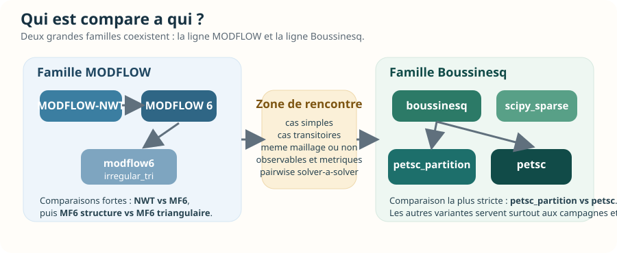
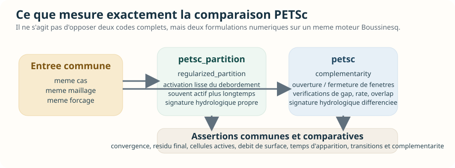
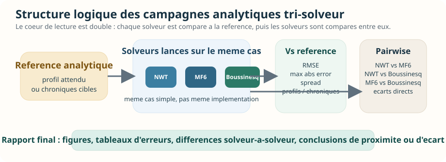
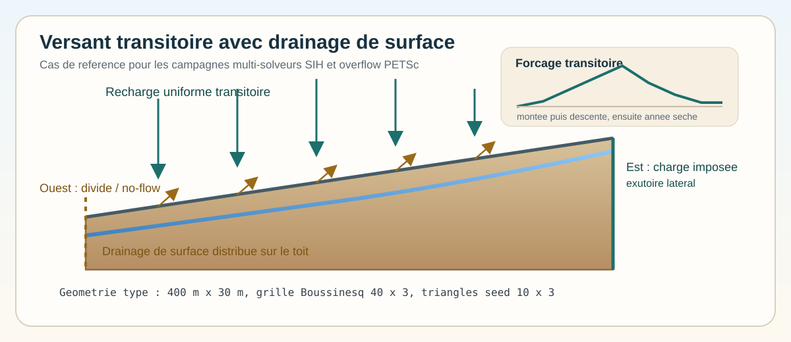
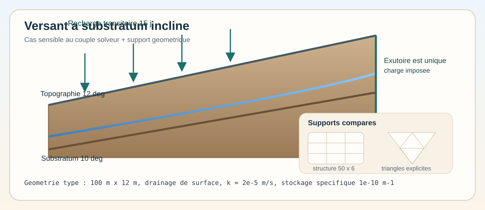
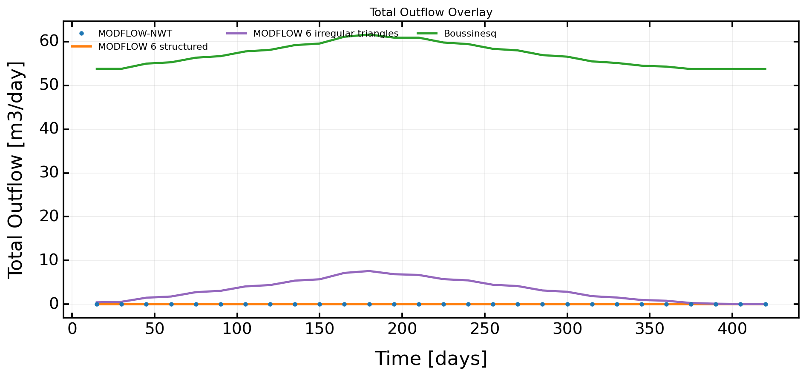
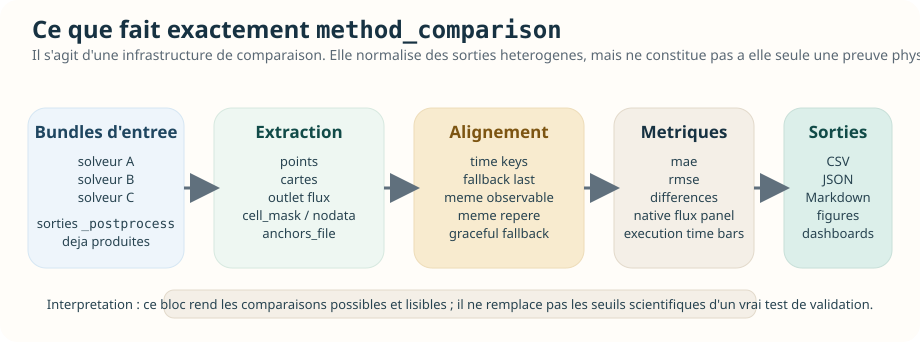

Inventaire des tests d'intercomparaison
Date: 2026-04-14
Perimetre retenu
Dans ce depot, j'appelle test d'intercomparaison un test ou un script qui compare plusieurs solveurs, backends ou methodes sur un meme cas.
Je separe volontairement :
- les intercomparaisons scientifiques automatisees,
- la couverture unitaire de soutien autour de ces scenarios,
- les tests de l'infrastructure generique d'intercomparaison,
- les benchmarks d'intercomparaison en calibration,
- les scripts d'intercomparaison non ou peu testes.
1. Intercomparaisons scientifiques automatisees
Ce sont les cas les plus proches d'un "vrai" inventaire de tests d'intercomparaison au sens scientifique.
1.1 Comparaisons PETSc/Boussinesq sur cas numeriques
| Fichier | Nature | Portee |
|---|---|---|
tests/validation/numerical/transient/test_boussinesq_hillslope_recharge_pulse_overflow_petsc.py |
1 test parametre, 4 executions |
Compare petsc_partition et petsc sur le cas numerique transitoire d'overflow de versant, avec variantes de forcage (strong, alternating). |
tests/validation/numerical/steady/test_boussinesq_headwater_100km2_petsc.py |
1 test parametre, 2 executions |
Compare les deux fermetures de surface PETSc (regularized_partition vs complementarity) sur un bassin reel headwater_100km2 en regime stationnaire. |
tests/validation/numerical/transient/test_boussinesq_headwater_100km2_petsc_transient.py |
3 tests, dont 1 parametre |
Compare les deux fermetures PETSc sur cas reel transitoire, puis verifie qu'elles se distinguent bien sur des forcages cycling recharge, homogenes et heterogenes. |
1.2 Resume
3fichiers de validation numerique d'intercomparaison5fonctions de test10executions pytest effectives en tenant compte des parametrisations- contraintes d'environnement :
- Linux uniquement pour les cas PETSc,
petsc4pyrequis,- plusieurs tests sont marques
slow
Partie detaillee - intercomparaison de solveurs
Cette section zoome uniquement sur l'intercomparaison de solveurs, au sens large, et exclut volontairement les benchmarks de calibration.
Le point cle a retenir est le suivant :
- le depot contient beaucoup de materiel de comparaison solveur-a-solveur,
- mais la partie strictement automatisee comme validation scientifique pytest
reste aujourd'hui concentree sur la famille
boussinesqPETSc, - les comparaisons
MODFLOW-NWTvsMODFLOW 6vsBoussinesqexistent surtout sous forme de scripts de campagne, de rapports exportes et d'infrastructure generique, pas encore sous forme d'une grosse batterie pytest end-to-end avec seuils d'acceptation solver-a-solver centralises.
Lecture visuelle rapide
Si vous ne retenez qu'une seule idee : la validation solveur-a-solveur la plus stricte est aujourd'hui concentree sur
petsc_partitionvspetsc. Les comparaisons multi-codesMODFLOW-NWT/MODFLOW 6/Boussinesqsont deja nombreuses, mais elles vivent surtout comme campagnes reproductibles, infrastructure de comparaison et artefacts exportes.
Figure 1. Le rapport couvre bien plusieurs couches, mais la partie "preuve scientifique automatisee" reste ciblee. Le reste du depot sert surtout a comparer, diagnostiquer, produire des artefacts et preparer une future industrialisation des comparaisons multi-codes.

Figure 2. Les comparaisons ne portent pas toutes sur des codes entierement differents. Certaines opposent deux solveurs distincts, d'autres deux backends ou deux fermetures numeriques a l'interieur de la meme famille.
Carte des solveurs et variantes compares
| Identifiant | Nature exacte | Statut dans le depot |
|---|---|---|
modflownwt |
solveur MODFLOW-NWT | compare dans scripts analytiques, scripts transitoires, benchmark Linux, launcher method_comparison |
modflow6 |
solveur MODFLOW 6 sur maillage structure | compare dans scripts analytiques, scripts transitoires, launcher method_comparison, cas a substratum incline |
modflow6_irregular_tri |
variante MF6 sur triangles irreguliers | compare dans les scripts transitoires de versant et de substratum incline |
boussinesq |
runtime local dense Boussinesq | compare dans scripts analytiques, scripts transitoires, benchmark Linux, multi-solver overflow |
petsc_partition |
runtime Boussinesq PETSc avec loi de surface regularized_partition |
compare dans les validations numeriques strictes et dans les campagnes multi-solveurs |
petsc |
runtime Boussinesq PETSc avec formulation complementarity |
compare dans les validations numeriques strictes et dans les campagnes multi-solveurs |
scipy_sparse |
variante non-PETSc Boussinesq mentionnee comme reference de comparaison | disponible dans le cas overflow, mais peu visible dans la couverture pytest courante |
Axes de comparaison effectivement presents
| Axe | Ce qui est compare | Exemples |
|---|---|---|
| famille de solveurs | modflownwt vs modflow6 vs boussinesq |
tools/validation_compare_simple_cases.py, tools/validation_compare_transient_simple_cases.py |
| fermetures de surface dans Boussinesq | petsc_partition vs petsc |
tests/validation/numerical/*petsc*.py, run_multi_solver_case.py |
| backend local vs backend PETSc | boussinesq local vs petsc_partition vs petsc |
tools/investigate_linux_nwt_boussinesq_transient.py, run_multi_solver_case.py |
| meme solveur, maillages differents | modflow6 structure vs modflow6_irregular_tri |
tools/investigate_sloping_substratum_transient.py |
| solveurs differents, meme maillage | modflow6 vs boussinesq sur mesh_input partage |
run_method_comparison_example12_fast_shared_mesh.toml |
| solveurs differents, maillages differents | modflow6 triangulaire vs modflownwt structure |
run_method_comparison_mf6_vs_nwt_different_meshes.toml |
| solveur-a-verite analytique puis solver-a-solver | chaque solveur contre la reference, puis pairwise entre solveurs | vscs_20260412, vtcs_20260412 |
Lecture operationnelle par niveau de couverture
| Niveau | Ce que cela veut dire | Situation actuelle |
|---|---|---|
A |
validation scientifique pytest bout en bout, avec assertions numeriques | present surtout pour petsc_partition vs petsc |
B |
script de campagne reproductible qui lance plusieurs solveurs et publie un rapport | present et assez riche |
C |
infrastructure generique d'intercomparaison et tests de plomberie | tres present avec launchers/method_comparison |
D |
artefacts deja produits dans out/ |
present sur plusieurs scenarios recents |
1. Famille de comparaison la plus stricte : Boussinesq PETSc
La seule famille vraiment couverte en validation pytest solver-a-solver stricte
est aujourd'hui la comparaison des deux formulations de surface sur le runtime
PETSc de boussinesq.
Schema de lecture du bloc PETSc

Figure 3. La question scientifique n'est pas "quel code gagne ?", mais "deux formulations distinctes sur le meme cas produisent-elles des comportements differencies, coherents et numeriquement sains ?".
1.1 Cas boussinesq_hillslope_recharge_pulse_overflow_1d
Fichier :
tests/validation/numerical/transient/test_boussinesq_hillslope_recharge_pulse_overflow_petsc.py
Ce qui est compare :
petsc_partitionpetsc
Forcages exerces par le test :
- cas nominal PETSc partition,
- cas nominal PETSc complementarity,
- preset
strong, - preset
alternating
Ce qui est verifie :
- activation effective du seuil de debordement de surface,
- existence d'un debordement total non nul,
- existence d'une longueur active non nulle,
- existence d'un temps d'apparition fini,
- coherence entre le resume runtime et les diagnostics reconstruits,
- pour
petsc, convergence de chaque periode, - pour
petsc, respect de la tolerance residuelle, - pour
petscen modealternating, multiplicite des fenetres d'activation et des transitions, - pour
petsc, respect des metriques de complementarite :- gap minimum,
- taux minimum,
- overlap maximal.
Interpretation :
- ce test ne compare pas encore
MODFLOW-NWTouMODFLOW 6, - il compare deux lois de fermeture sur un meme moteur numerique,
- c'est donc une intercomparaison de solveur au sens "backend numerique / loi de surface", pas une intercomparaison multi-code generale.
1.2 Cas reel headwater_100km2 stationnaire
Fichier :
tests/validation/numerical/steady/test_boussinesq_headwater_100km2_petsc.py
Ce qui est compare :
run_headwater_100km2_outlet_2_boussinesq_petsc_partition_mesh_input.tomlrun_headwater_100km2_outlet_2_boussinesq_petsc_mesh_input.toml
Nature de la comparaison :
- meme bassin reel,
- meme maillage commite,
- meme famille
boussinesq, - fermeture de surface differente.
Ce qui est verifie :
- le runtime est bien
petsc, - la fermeture resolue correspond a la config attendue,
- le solveur stationnaire itere effectivement,
- le seuil de surface s'active,
- le nombre de cellules actives et le debit total de surface sont significatifs,
- pour la formulation
complementarity, les contraintes de complementarite restent respectees.
1.3 Cas reel headwater_100km2 transitoire
Fichier :
tests/validation/numerical/transient/test_boussinesq_headwater_100km2_petsc_transient.py
Ce qui est compare :
- cas transitoire pulse :
petsc_partitionvspetsc, - cas
cycling rechargehomogene :petsc_partitionvspetsc, - cas
cycling rechargeheterogene :petsc_partitionvspetsc.
Ce qui est verifie sur le cas pulse :
- runtime
petsc, - bon choix de fermeture,
- convergence de toutes les periodes,
- residual final sous tolerance,
- activation du seuil de surface,
- nombre de cellules actives et debit de surface suffisamment eleves,
- contraintes de complementarite quand la formulation mixte est activee.
Ce qui est verifie sur les cas cycling recharge :
- la fermeture
regularized_partitionreste quasiment toujours active, - la fermeture
complementarityouvre et ferme plusieurs fenetres de debordement, - le nombre de pas actifs, de transitions et de fenetres differe fortement entre les deux formulations,
- la formulation mixte revient a
0cellule active en fin de sequence, - les contraintes de complementarite restent satisfaites.
Lecture scientifique :
- ces tests ne cherchent pas une "verite" externe,
- ils cherchent a prouver que deux formulations numeriques distinctes produisent des signatures hydrologiques distinctes et coherentes sur un meme cas.
2. Scripts de campagne tri-solveur MODFLOW-NWT / MODFLOW 6 / Boussinesq
Ce volet est important : la comparaison multi-code existe bien dans le depot, mais elle vit surtout dans des scripts de campagne et dans des rapports, pas encore dans des validations pytest centralisees.
Schema de lecture des campagnes tri-solveur

Figure 4. Les scripts validation_compare_simple_cases.py et validation_compare_transient_simple_cases.py ont deja la structure d'un banc de comparaison. Ce qui leur manque surtout aujourd'hui, c'est une fermeture pytest centralisee avec seuils solver-a-solver geles.
2.1 Cas analytiques simples stationnaires
Script :
tools/validation_compare_simple_cases.py
Solveurs compares :
modflownwtmodflow6boussinesq
Cas compares :
dupuit_fixed_head_1ddupuit_uniform_recharge_1dboussinesq_fixed_head_piecewise_k_1d
Logique de comparaison :
- chaque solveur est d'abord compare a la reference analytique du cas,
- un second niveau calcule les ecarts pairwise solveur-a-solveur,
- des figures sont generees avec :
- profil analytique,
- profils numeriques,
- residus solveur-reference,
- differences solveur-solveur.
Metriques sorties :
rmse_vs_analytical_mmax_abs_error_vs_analytical_mcross_row_spread_mpairwise_profile_rmse_mpairwise_max_abs_error_mpairwise_mean_abs_error_m
Artefact deja present :
out/vscs_20260412
Exemples de signal deja observe dans cet artefact :
- sur
dupuit_fixed_head_1d,MODFLOW-NWTetMODFLOW 6restent tres proches (pairwise RMSE = 0.0054 m), alors queBoussinesqest nettement plus loin (0.0449 mcontre NWT,0.0429 mcontre MF6) ; - sur
boussinesq_fixed_head_piecewise_k_1d,MODFLOW-NWTetMODFLOW 6restent encore proches (0.0035 mpairwise RMSE), tandis queBoussinesqs'ecarte davantage (0.0318 mcontre NWT,0.0307 mcontre MF6).
Conclusion :
- le script joue deja le role d'un mini banc d'intercomparaison tri-solveur,
- mais il n'est pas protege par un test end-to-end qui imposerait des seuils solver-a-solver stables dans pytest.
2.2 Cas analytiques simples transitoires
Script :
tools/validation_compare_transient_simple_cases.py
Solveurs compares :
modflownwtmodflow6boussinesq
Cas compares :
lu_recharge_step_1dlu_boundary_step_1dlu_recharge_step_deep_1d
Metriques sorties :
space_time_rmse_mspace_time_max_abs_error_mfinal_profile_rmse_mfinal_profile_max_abs_error_mrow_spread_mpairwise_final_profile_rmse_mpairwise_final_profile_max_abs_error_mpairwise_monitor_rmse_mpairwise_monitor_max_abs_error_m
Artefact deja present :
out/vtcs_20260412
Exemples de signal deja observe :
- sur
lu_recharge_step_1d,MODFLOW-NWTetMODFLOW 6sont quasiment indiscernables sur le profil final (pairwise final-profile RMSE = 0.0000 m), alors queBoussinesqs'eloigne (0.0182 met0.0181 m) ; - sur
lu_boundary_step_1d, l'ecart final reste faible pour tous, maisBoussinesqreste plus distant sur les moniteurs temporels ; - sur
lu_recharge_step_deep_1d, le cas profond resserre les ecarts, maisMODFLOW-NWTetMODFLOW 6restent les plus proches l'un de l'autre.
Conclusion :
- le depot dispose deja d'un observatoire tri-solveur analytique stationnaire et transitoire,
- mais cet observatoire est aujourd'hui outille comme script de reporting, pas comme suite pytest numerique solver-a-solver.
3. Scripts d'investigation multi-solveurs sur cas de versant
3.1 tools/investigate_surface_interaction_hillslope_transient.py
Ce script est le coeur des campagnes transitoires de versant avec drainage.
Solveurs compares :
modflownwtmodflow6modflow6_irregular_triboussinesq
Cas :
- versant synthetique incline,
- recharge croissante puis decroissante,
- une annee humide suivie d'une annee seche,
- drainage de surface,
- comparaison des hydrogrammes, charges et chroniques de debordement.
Sorties produites :
timeseries.csvsummary_metrics.csvexecution_times.csvhead_point_timeseries.csvsummary.md- figures de profils, flux, budget, temps d'execution.
Couverture actuelle :
tests/unit/tools/test_investigate_surface_interaction_hillslope_transient.pycouvre les helpers critiques,- mais pas la campagne complete avec execution de tous les solveurs.

sih_tx_4cmp et au cas overflow.
MODFLOW-NWT, MODFLOW 6, MF6 irregular et Boussinesq dans out/sih_tx_4cmp_linux_20260414.
3.2 tools/investigate_linux_nwt_boussinesq_transient.py
Solveurs compares :
modflownwtboussinesqlocalpetsc_partitionpetsc
Cas :
- meme versant,
4mois de montee,4mois de descente,6mois a recharge nulle,- pas de temps
10 jours.
Artefact deja present :
out/linux_nwt_bouss_4m4m6m_20260414
Signal numerique deja observe dans cet artefact :
- apparition du debit a
10 jourspour les quatre solveurs, - pic de debit total :
51.9696 m3/daypourMODFLOW-NWT,17.1092 m3/daypourBoussinesq local,56.5275 m3/daypourPETSc regularized_partition,65.4825 m3/daypourPETSc complementarity,
- temps mur :
30.11 spourMODFLOW-NWT,0.54 spourBoussinesq local,16.64 spourPETSc partition,11.89 spourPETSc complementarity.
Lecture :
- ce script expose deja un benchmark multi-code tres informatif,
- mais il reste un benchmark d'investigation, pas un test pytest de non-regression scientifique.

linux_nwt_bouss_4m4m6m_20260414 : superposition du debit total de sortie. On retrouve visuellement le decalage entre Boussinesq local, PETSc partition et PETSc complementarity.
3.3 tools/investigate_sloping_substratum_transient.py
Solveurs compares :
modflownwtmodflow6structuremodflow6_irregular_triboussinesq
Cas :
- topographie a
12 deg, - substratum a
10 deg, - un seul exutoire impose a l'est,
- recharge transitoire,
- comparaison sur support structure et sur bundle triangulaire explicite.
Artefact deja present :
out/sih_sloping_substratum_10deg_20260414
Signal deja observe :
MODFLOW-NWTetMODFLOW 6 structuredne montrent aucun debit total sur ce run exporte,MODFLOW 6 irregular trianglesmonte a7.5906 m3/day,Boussinesqmonte a61.6073 m3/day,- le cas est donc interessant parce qu'il met en evidence une forte sensibilite au couple solveur + support geometrique.

12 deg, fond a 10 deg, recharge transitoire, drainage de surface et comparaison entre support structure et maillage triangulaire explicite.
sih_sloping_substratum_10deg_20260414 : debit total de sortie. Le contraste entre support structure et triangles explicites est immediatement visible.
3.4 run_multi_solver_case.py pour le cas overflow
Fichier :
validation_cases/numerical/transient/boussinesq_hillslope_recharge_pulse_overflow_1d/run_multi_solver_case.py
Solveurs compares par defaut :
boussinesqpetsc_partitionpetsc
Rendu principal :
- superposition du debit total de debordement,
- superposition du debit total de sortie,
- profils de charge a dates choisies,
- budget complet,
- chroniques en points,
- temps d'execution.
Artefact deja present :
out/boussinesq_hillslope_overflow_multi_linux_windows_context_20260414
Signal deja observe :
boussinesqlocal etPETSc regularized_partitionsont quasiment superposes sur ce contexte Windows :- debut du debordement a
3.00 jours, - pic de debordement
~168.12 m3/day, - meme clearance maximale
-0.5788 m,
- debut du debordement a
PETSc complementarityse distingue fortement :- apparition beaucoup plus tardive a
19.00 jours, - pic plus faible
100.256 m3/day, - clearance bien plus proche de la surface
-0.1194 m.
- apparition beaucoup plus tardive a
Lecture :
- c'est probablement l'exemple le plus lisible du depot pour montrer l'effet propre de la loi de fermeture de surface sur un meme cas.

boussinesq, PETSc partition et PETSc complementarity. C'est la figure la plus directe pour voir l'effet de la loi de surface.
4. Infrastructure generique launchers/method_comparison
launchers/method_comparison n'est pas un test scientifique en soi ; c'est la
boite a outils qui permet de comparer des variantes solveur/maillage a partir
de sorties _postprocess.
Schema de la chaine method_comparison

Figure 5. L'infrastructure est deja tres solide pour normaliser, comparer et publier. C'est un multiplicateur de valeur pour les campagnes multi-solveurs, mais elle doit etre branchee a des seuils d'acceptation si l'on veut une validation automatique forte.
4.1 Ce que l'infrastructure sait faire
- comparer des variantes sur meme maillage ou maillages differents,
- extraire des observables de type
point,outlet,map,cell_mask, - aligner les temps avec des cles de comparaison et des fallback de type
time_selector:last, - reconstruire un
outlet_fluxmeme quand les solveurs ne publient pas la meme variable native, - produire :
observables.csv,comparison_metrics.csv,comparison_differences.csv,comparison_metrics.json,comparison_report.md,- des figures de cartes, differences, series et tableaux de bord,
- des CSV de chroniques natives et des barres de temps d'execution.
4.2 Couverture de test directe
Fichier principal :
tests/unit/launchers/test_method_comparison_launcher.py
Ce que couvrent explicitement les tests :
- resolution des chemins et overlays,
- ancrages spatiaux (
anchors_file), - extraction d'observables ponctuels, cartes et flux d'exutoire,
- conversion du flux d'exutoire Boussinesq et MODFLOW,
- masquage
nodata, - refus d'un
outletsans localisation explicite, - generation des figures :
map_comparison,difference_map,timeseries,point_dashboard,native_flux_panel,execution_time_bars,
- calcul des metriques
mae,rmse, alignement temporel et strategie de fallback.
Exemple precise d'assertion de plomberie :
- un test verifie qu'un
head_at_pointdecale de2.0 mdonne bien unemae = 2.0, - un autre verifie que des selections
lastsur indices de temps differents s'alignent quand meme viafallback_time_key.
4.3 Configurations d'exemple deja reliees a cette infrastructure
| Configuration | Type de comparaison |
|---|---|
run_method_comparison_mf6_vs_nwt_same_regular_mesh.toml |
MODFLOW 6 vs MODFLOW-NWT sur meme maillage structure, avec observables point, map, outlet |
run_method_comparison_mf6_vs_nwt_different_meshes.toml |
MODFLOW 6 triangulaire via mesh_input vs MODFLOW-NWT structure, principalement sur observables map |
run_method_comparison_mf6_vs_nwt_different_meshes_demonstrative.toml |
variante demonstrative plus riche avec point, outlet et plusieurs cartes |
run_method_comparison_example12_multi_method_moderate.toml |
comparaison multi-variantes melangeant structure et mesh_input |
run_method_comparison_example12_fast_shared_mesh.toml |
MODFLOW 6 vs Boussinesq sur meme maillage triangulaire versionne |
run_method_comparison_example12_extensive_mf6_vs_nwt.toml |
comparaison plus lourde MF6 vs NWT |
run_method_comparison_headwater_100km2_outlet_2_backends.toml |
trois backends sur un bassin reel et un bundle committe |
run_method_comparison_headwater_100km2_outlet_2_transient_pulsed_recharge_backends.toml |
comparaison backend sur cas reel transitoire pulse |
run_method_comparison_headwater_100km2_outlet_2_transient_cycling_recharge_heterogeneous_backends.toml |
comparaison backend sur cas reel transitoire heterogene |
run_method_comparison_headwater_100km2_outlet_2_mf6_transient_scenarios.toml |
comparaison scenario-vs-scenario a l'interieur de MF6 (mf6_reference vs mf6_heterogeneous_decay) |
Point important :
- la presence de ces configs dans les tests veut dire qu'elles se chargent et respectent le contrat d'infrastructure,
- cela ne veut pas dire qu'elles sont toutes executees en validation scientifique avec seuils solveur-a-solveur.
5. Ce qui est reellement automatise aujourd'hui
5.1 Oui, automatise scientifiquement
- comparaison
petsc_partitionvspetscsur cas numeriques cibles, - verification de convergence, d'activation des seuils, de fenetres d'activation et de contraintes de complementarite.
5.2 Oui, automatise comme outillage
- toute la plomberie
method_comparison, - les helpers d'investigation transitoire,
- les runners multi-solveurs autour du cas overflow.
5.3 Oui, executable et deja utilise, mais pas verrouille en pytest
- comparaisons tri-solveur analytiques
vscsetvtcs, - benchmark Linux
MODFLOW-NWTvsBoussinesq, - intercomparaison transitoire a substratum incline,
- campagnes de versant avec
MODFLOW-NWT,MODFLOW 6,MF6 irregular,Boussinesq.
5.4 Pas encore present
- une suite pytest unique qui lancerait regulierement un vrai banc
MODFLOW-NWTvsMODFLOW 6vsBoussinesqavec seuils pairwise stabilises ; - une registry centrale des comparaisons solver-a-solver avec statut
strict validation/campaign script/infrastructure only; - une normalisation unique des metriques pairwise pour tous les scripts de campagne.
2. Couverture unitaire de soutien des scenarios d'intercomparaison
Ces tests ne valident pas le phenomene physique bout en bout, mais securisent les outils et les cas utilises par les intercomparaisons.
| Fichier | Nombre de tests | Role principal |
|---|---|---|
tests/unit/validation/test_hillslope_pulse_overflow_case.py |
10 |
Contrat du cas boussinesq_hillslope_recharge_pulse_overflow_1d : presets, diagnostics, selection de snapshots, gestion du solveur de comparaison. |
tests/unit/validation_cases/test_boussinesq_hillslope_overflow_multi_solver.py |
5 |
Contrat du runner multi-solveur run_multi_solver_case.py : normalisation des solveurs, exports CSV, presets de contexte. |
tests/unit/tools/test_investigate_surface_interaction_hillslope_transient.py |
8 |
Contrat du script d'investigation transitoire multi-solveur avec drainage de surface. |
tests/unit/tools/test_investigate_linux_nwt_boussinesq_transient.py |
2 |
Contrat du benchmark Linux MODFLOW-NWT vs variantes Boussinesq. |
tests/unit/tools/test_investigate_sloping_substratum_transient.py |
3 |
Contrat geometrique du cas transitoire a substratum incline. |
Resume :
5fichiers28tests unitaires de soutien
3. Infrastructure generique d'intercomparaison
Le depot contient un moteur generique dedie aux comparaisons solveur/maillage :
launchers/method_comparison.
3.1 Tests principaux
| Fichier | Nombre de tests | Role principal |
|---|---|---|
tests/unit/launchers/test_method_comparison_launcher.py |
24 |
Couvre la configuration, l'extraction d'observables, les sorties CSV/JSON/Markdown, les figures, les flux d'exutoire, les cartes, le mode reuse, les metriques et le dispatch CLI launchers method-comparison. |
3.2 Tests satellites
| Fichier | Nombre de tests relies | Role principal |
|---|---|---|
tests/unit/launchers/test_hmp_simulation_cli.py |
1 |
Verifie le dispatch hmp compare vers MethodComparisonLauncher. |
tests/unit/launchers/test_regional_lab_launcher.py |
1 |
Verifie l'extraction d'artefacts enfants produits par un method_comparison. |
tests/unit/launchers/test_realistic_campaign_runner.py |
1 |
Verifie le chargement de la config run_method_comparison_headwater_100km2_outlet_2_mf6_transient_scenarios.toml. |
3.3 Configurations d'exemple explicitement couvertes
Le test test_example_method_comparison_configs_load charge explicitement les
configurations suivantes :
run_method_comparison_mf6_vs_nwt_same_regular_mesh.tomlrun_method_comparison_mf6_vs_nwt_different_meshes.tomlrun_method_comparison_mf6_vs_nwt_different_meshes_demonstrative.tomlrun_method_comparison_example12_multi_method_moderate.tomlrun_method_comparison_example12_fast_shared_mesh.tomlrun_method_comparison_example12_extensive_mf6_vs_nwt.tomlrun_method_comparison_headwater_100km2_outlet_2_backends.tomlrun_method_comparison_headwater_100km2_outlet_2_transient_pulsed_recharge_backends.tomlrun_method_comparison_headwater_100km2_outlet_2_transient_cycling_recharge_heterogeneous_backends.toml
Une dixieme configuration orientee campagne est testee a part :
run_method_comparison_headwater_100km2_outlet_2_mf6_transient_scenarios.toml
Resume :
27tests relies a l'infrastructuremethod_comparison- couverture large de l'outillage, mais pas de validation scientifique bout en bout
4. Intercomparaisons de calibration
Ce ne sont pas des comparaisons de solveurs, mais des intercomparaisons de
methodes d'inversion sur un meme benchmark same-solver twin.
4.1 Tests de validation calibration
| Fichier | Regime | Nature |
|---|---|---|
tests/validation/calibration/test_twin_dupuit_fixed_head_modflow6.py |
steady | benchmark de reference rapide sur dupuit_fixed_head_1d |
tests/validation/calibration/test_twin_dupuit_fixed_head_posterior_modflow6.py |
steady | benchmark oriente distribution/posterior |
tests/validation/calibration/test_twin_dupuit_fixed_head_mesh_perturbed_modflow6.py |
steady | benchmark avec verite et calibration sur maillages perturbes |
tests/validation/calibration/test_twin_dupuit_fixed_head_noisy_modflow6.py |
steady | benchmark bruite |
tests/validation/calibration/test_twin_linearized_recharge_step_modflow6.py |
transient | benchmark K + Sy multi-observable |
tests/validation/calibration/test_twin_linearized_recharge_step_noisy_modflow6.py |
transient | variante bruitee du benchmark transitoire |
tests/validation/calibration/test_twin_boussinesq_fixed_head_piecewise_k_modflow6.py |
steady | benchmark zone piecewise K |
Resume :
7fichiers7tests de validation calibration- objectif : comparer plusieurs methodes de calibration sur une meme verite synthetique, pas plusieurs solveurs
4.2 Support documentation
Le rendu de la page documentaire d'intercomparaison calibration est couvert par :
tests/unit/tools/test_doc_gallery_calibration_cases.py- test cle :
test_build_calibration_intercomparison_page_renders_rows
- test cle :
5. Scripts et workflows d'intercomparaison non ou peu testes
Ces scripts existent clairement comme outils d'intercomparaison, mais ils ne sont pas couverts par des tests bout en bout dedies.
| Script | Type |
|---|---|
tools/validation_compare_simple_cases.py |
rapport solveur-a-solveur sur cas analytiques simples (MODFLOW-NWT, MODFLOW 6, Boussinesq) |
tools/validation_compare_transient_simple_cases.py |
rapport solveur-a-solveur sur cas analytiques transitoires simples |
tools/investigate_surface_interaction_hillslope_transient.py |
investigation transitoire multi-solveur avec drainage de surface |
tools/investigate_linux_nwt_boussinesq_transient.py |
benchmark Linux MODFLOW-NWT vs Boussinesq local/PETSc |
tools/investigate_sloping_substratum_transient.py |
intercomparaison transitoire sur substratum incline |
validation_cases/numerical/transient/boussinesq_hillslope_recharge_pulse_overflow_1d/run_multi_solver_case.py |
runner multi-solveur dedie au cas d'overflow de versant |
Observation :
- plusieurs de ces scripts ont des tests unitaires sur leurs briques internes, mais pas de campagne pytest bout en bout qui execute la comparaison complete ;
- en pratique, le dossier
out/montre qu'ils ont deja ete lances manuellement ou en smoke test.
6. Artefacts d'intercomparaison deja presents dans out/
Examples visibles au moment de l'inventaire :
out/linux_nwt_bouss_4m4m6m_20260414out/sih_sloping_substratum_10deg_20260414out/boussinesq_hillslope_overflow_multi_linux_windows_context_20260414out/vscs_20260412out/vtcs_20260412
Ces dossiers confirment que le depot contient non seulement les tests et scripts, mais aussi des executions recentes d'intercomparaison.
7. Conclusion operationnelle
Si on retient le perimetre strict des tests d'intercomparaison scientifiques automatises, l'inventaire actuel est :
3fichiers de validation numerique5fonctions de test10executions parametrisees
Si on retient le perimetre large incluant l'outillage, la calibration et la couverture unitaire associee, l'ecosysteme d'intercomparaison couvre :
3fichiers de validation numerique d'intercomparaison5fichiers unitaires de soutien scientifique4fichiers de tests relies au launchermethod_comparison7fichiers de validation calibration- plusieurs scripts d'intercomparaison hors pytest bout en bout
Point d'attention principal :
- le depot dispose d'une bonne base d'outillage d'intercomparaison,
mais les workflows
tools/validation_compare_*ettools/investigate_*restent surtout des scripts operatoires ou exploratoires plutot que des tests automatises end-to-end.